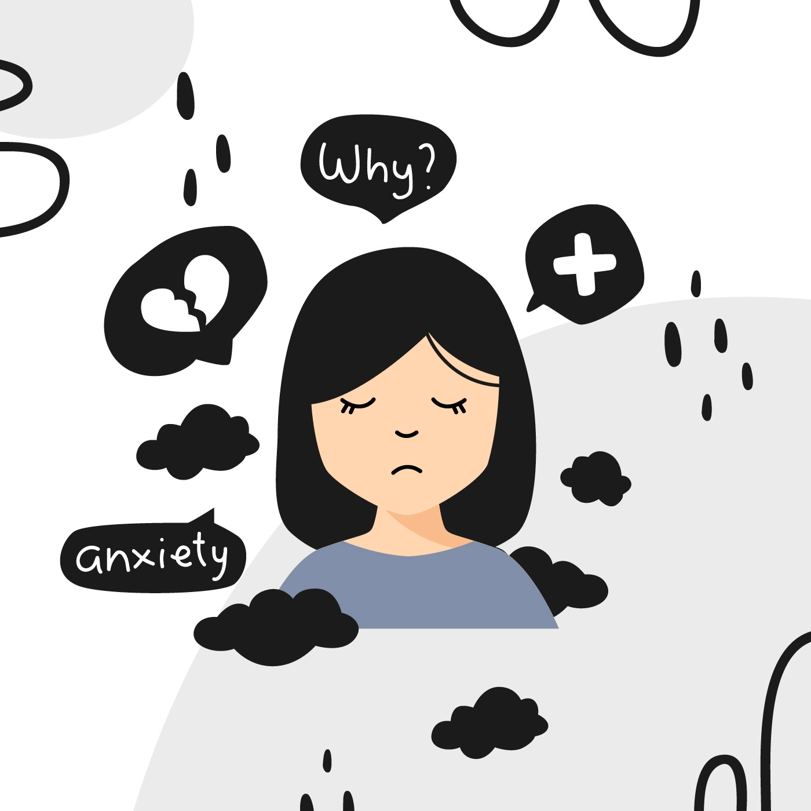
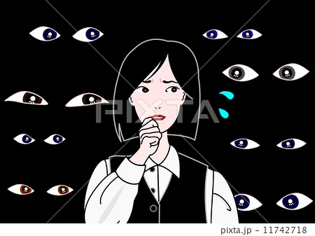
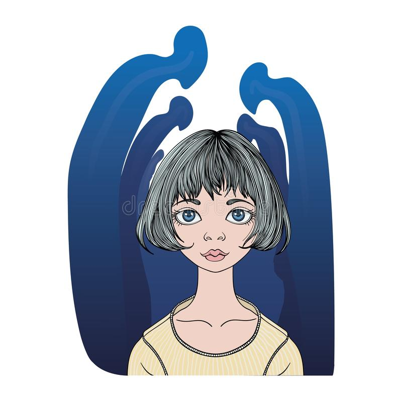
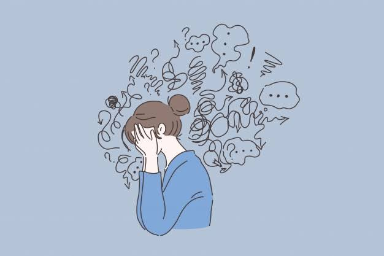
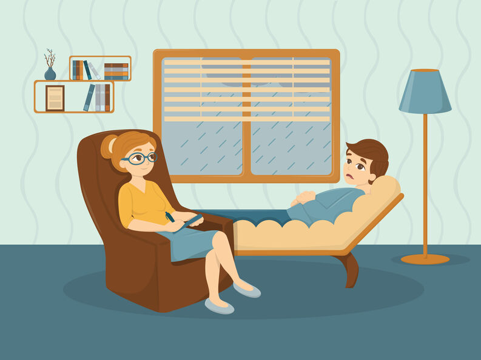

| home | trastorno de ansiedad social | trastorno depresivo mayor |
|
¿Tiene mucho temor de ser juzgado por los demás? ¿Está muy consciente de sí mismo en las situaciones sociales diarias? ¿Evita conocer gente nueva? Si usted se ha sentido así durante por lo menos seis meses y estos sentimientos le hacen difícil hacer las tareas cotidianas, como hablar con otros en el trabajo o en la escuela, es posible que usted tenga un trastorno de ansiedad social.
El trastorno de ansiedad social (también llamado fobia social) es un problema de salud mental. Es un temor intenso y persistente de ser observado y juzgado por otros. Este temor puede afectar el trabajo, la escuela y otras actividades cotidianas. Incluso puede dificultarle hacer y mantener amigos. Sin embargo, el trastorno de ansiedad social no tiene que detenerlo de alcanzar su potencial. El tratamiento le puede ayudar a superar sus síntomas. |
| DEFINICIÓN | ||
|  |
El trastorno de ansiedad social es un tipo común de trastorno de ansiedad. Las personas con este trastorno tienen síntomas de ansiedad o miedo en ciertas o todas las situaciones sociales, como cuando conocen a personas nuevas, salen en citas, tienen una entrevista de trabajo, responden a una pregunta en clase o tienen que hablar con un cajero de una tienda. Incluso, hacer cosas sencillas frente a otras personas, como comer o beber delante de otros o usar un baño público, les puede causar ansiedad o temor. Tienen miedo de ser humilladas, juzgadas y rechazadas.
El temor que tienen las personas con este trastorno en situaciones sociales es tan fuerte que piensan que controlarlo está más allá de su capacidad. Como resultado, el temor se interpone con su capacidad para ir al trabajo, asistir a la escuela o hacer cosas cotidianas. Las personas con trastorno de ansiedad social pueden preocuparse por éstas y otras cosas por semanas antes de que ocurran. A veces, terminan no yéndose a lugares o eventos donde creen que podrían tener que hacer algo que les avergüence. Algunas personas con este trastorno no tienen ansiedad en los contextos sociales, sino que más bien tienen ansiedad de rendimiento. Es decir, sienten síntomas físicos de ansiedad en situaciones tales como cuando tienen que dar un discurso, participar en deportes, o bailar o tocar un instrumento musical en el escenario. En las personas que son extremadamente tímidas, el trastorno de ansiedad social suele comenzar en la juventud. Este trastorno no es tan raro. La investigación sugiere que alrededor del 7 por ciento de las personas en los Estados Unidos están afectadas. Sin tratamiento, el trastorno de ansiedad social puede durar muchos años o toda la vida y puede impedir que una persona alcance su máximo potencial. |
| SÍNTOMAS |
|
La timidez o incomodidad en ciertas situaciones no son necesariamente signos de trastorno de ansiedad social, especialmente, en los niños. El nivel de comodidad en las situaciones sociales varía y depende de los rasgos de la personalidad y de las experiencias de vida. Algunas personas son reservadas por naturaleza, y otras son más extrovertidas.
A diferencia del nerviosismo diario, el trastorno de ansiedad social comprende miedo, ansiedad y evasión, que interfieren en la rutina diaria, el trabajo, la escuela u otras actividades. El trastorno de ansiedad social suele comenzar a principios o mediados de la adolescencia, aunque algunas veces puede comenzar durante la niñez o en la adultez. Síntomas emocionales y conductuales Los signos y síntomas del trastorno de ansiedad social comprenden la persistencia de lo siguiente:
Las personas que padecen el tipo de trastorno de ansiedad social de ejecución padecen temor intenso y ansiedad solo al hablar o actuar en público, pero no en otros tipos de situaciones sociales. Síntomas físicos A veces, hay signos y síntomas físicos que pueden acompañar el trastorno de ansiedad social y pueden ser:
Los situaciones frecuentes y de todos los días que pueden ser difíciles de soportar cuando padeces un trastorno de ansiedad social son, por ejemplo:
|
| CAUSAS | ||
Como sucede con muchas otras enfermedades mentales, el trastorno de ansiedad social probablemente surge de una interacción compleja entre factores biológicos y ambientales. Las posibles causas son las siguientes:
|
 |
| FACTORES DE RIESGO | ||
|  |
Varios factores pueden aumentar el riesgo de contraer el trastorno de ansiedad social, entre ellos:
|
| COMPLICACIONES | ||
Si no se trata, el trastorno de ansiedad social puede controlar tu vida. La ansiedad puede interferir en el trabajo, el estudio, las relaciones o la capacidad de disfrutar la vida. El trastorno de ansiedad social puede producir:
|
 |
| TRATAMIENTO | ||
|  |
Psicoterapia
Una clase de psicoterapia llamada terapia cognitivo-conductual es especialmente útil para tratar el trastorno de ansiedad social. Enseña otras formas de pensar, comportarse y reaccionar ante distintas situaciones para sentir menos ansiedad o temor. Además, también sirve para aprender y practicar a desenvolverse socialmente. Puede ser especialmente útil realizar la terapia cognitivo-conductual en grupo Grupos de apoyo Muchas personas con ansiedad social también encuentran beneficiosos los grupos de apoyo. En el contexto de un grupo en que todas las personas tienen el trastorno de ansiedad social, puede recibir información imparcial y honesta sobre cómo los demás en el grupo lo ven. De esta manera, van dándose cuenta que sus pensamientos acerca de cómo otros lo juzgan y lo rechazan no son reales o están distorsionados. También puede aprender cómo otras personas con el trastorno de ansiedad social abordan y vencen el miedo a las situaciones sociales. Medicamentos Hay tres tipos de medicamentos que se usan para tratar el trastorno de ansiedad:
|